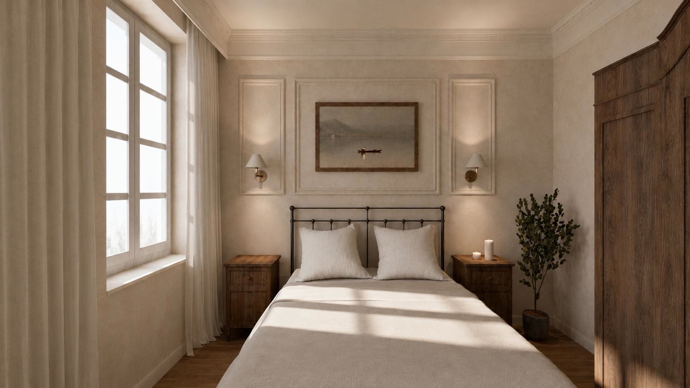
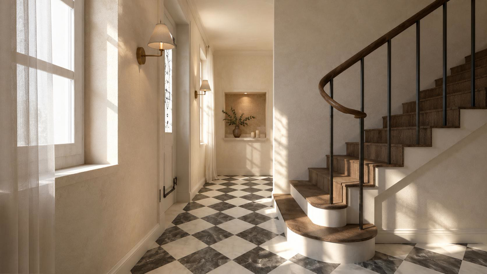
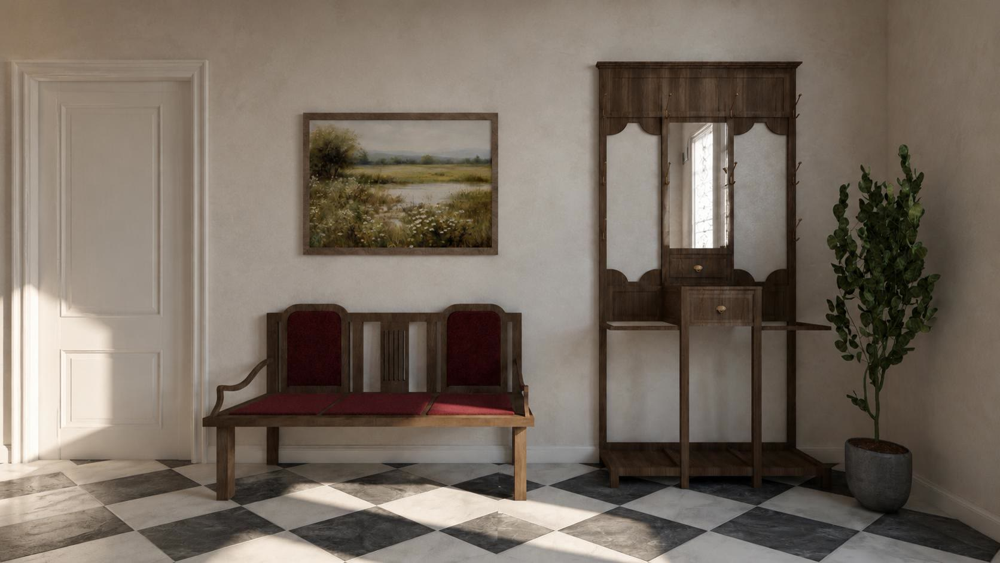
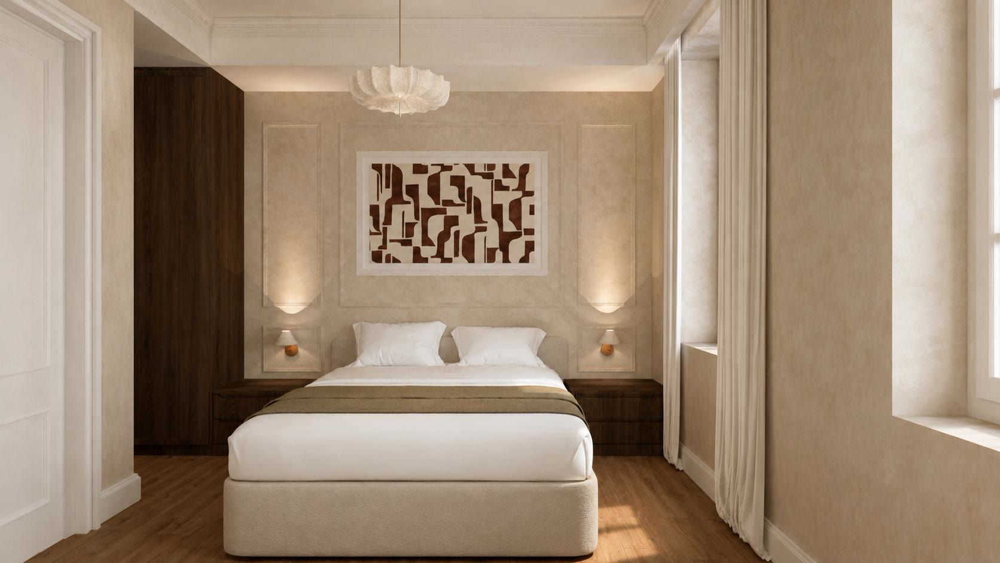
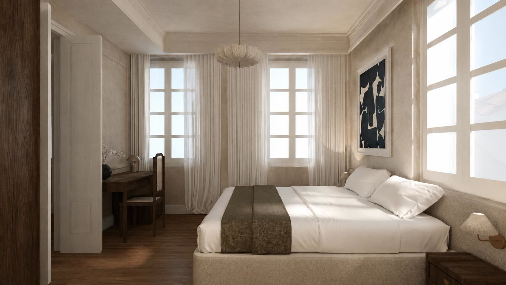
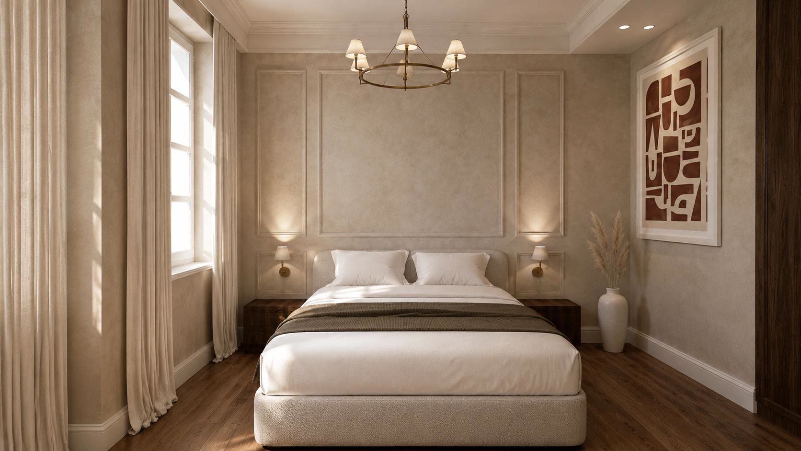
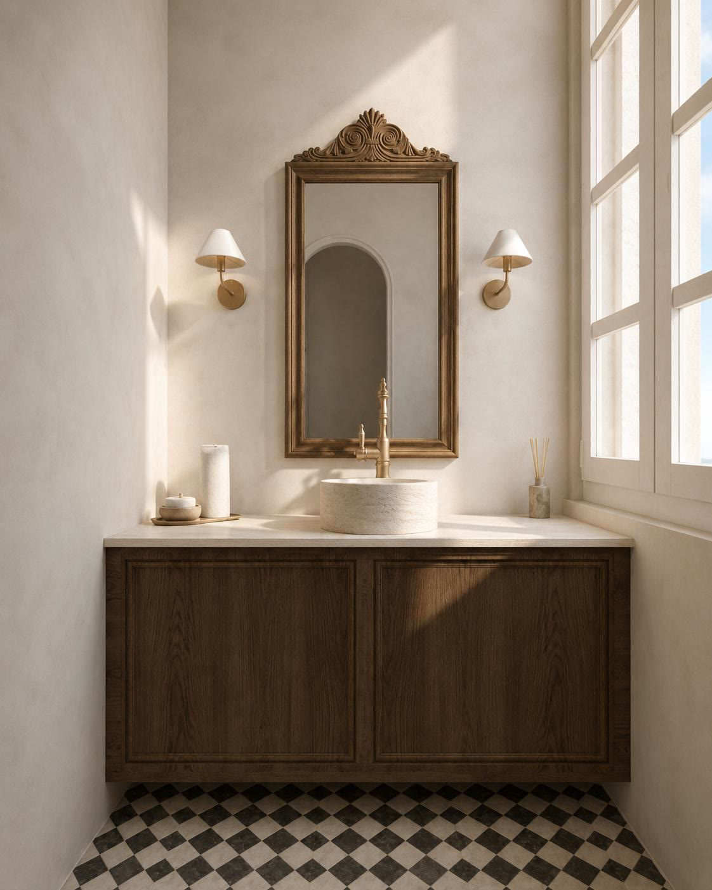
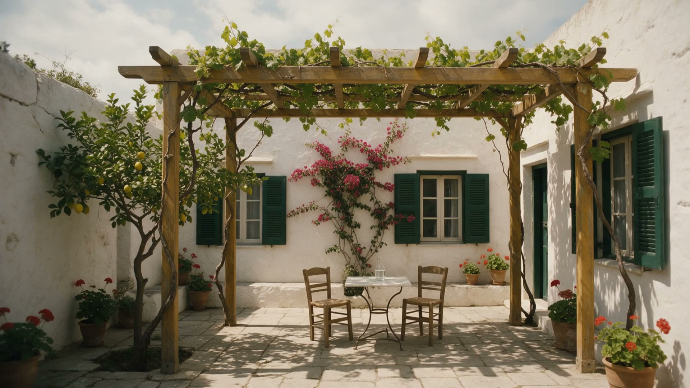
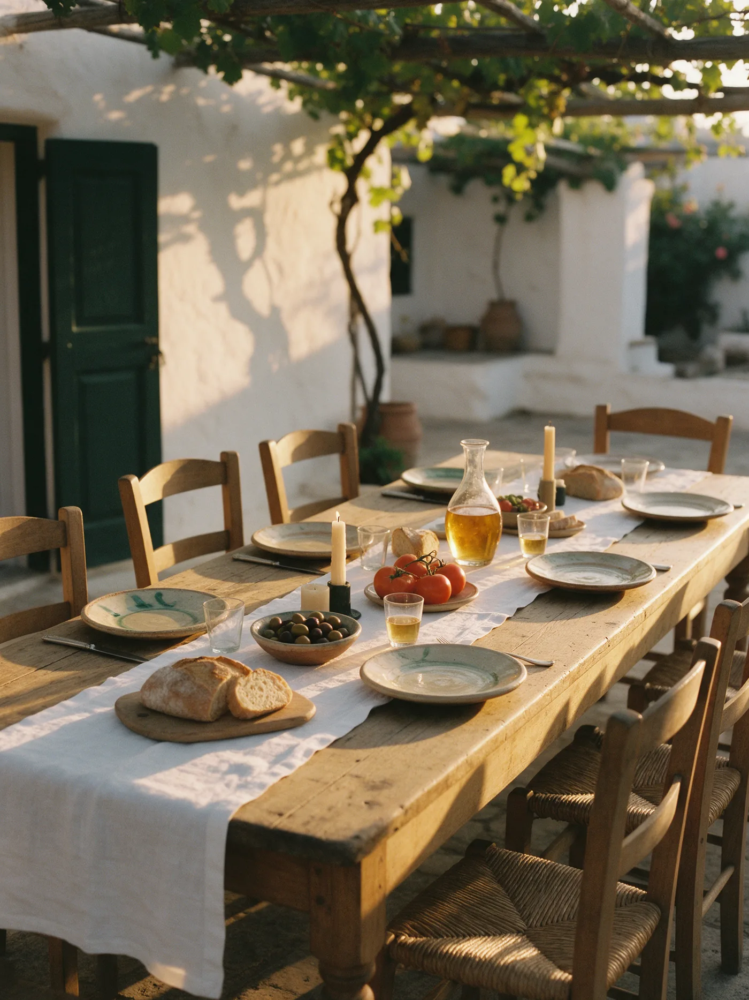
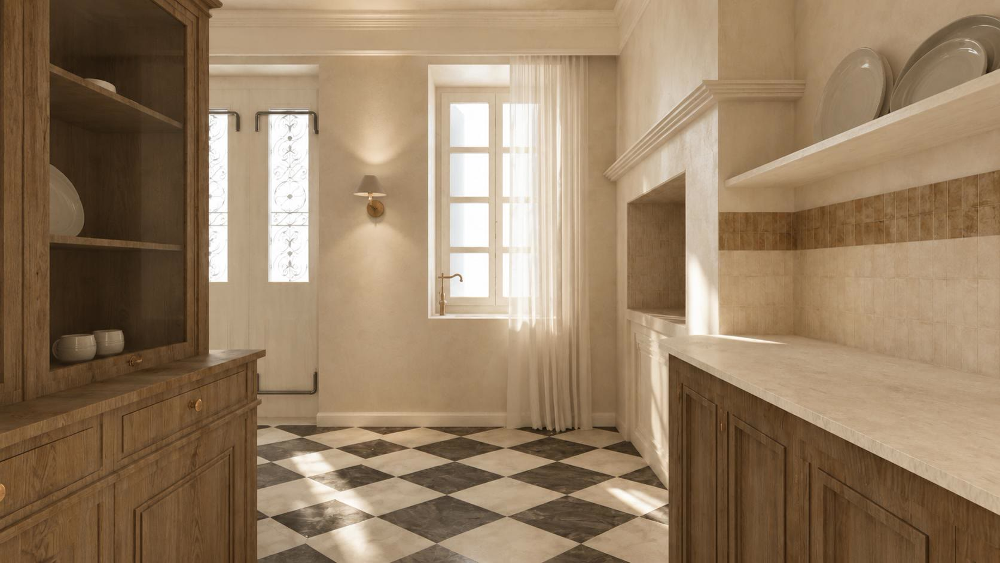

Efterpi
The muse of music
- Floor
- Ground
- Sleeps
- Four
Concept render
Karlovasi · Samos
A neoclassical house, four suites and one family. Opening 2027.
The garden first, then the sea.


There is no rush here. The front door opens onto marble laid in black and white, an oak stair that curves up to the rooms, and morning light moving slowly across lime plaster.
The house is being restored room by room by the family who keep it, so that it feels like a home you have been invited into rather than a hotel you have checked into.
Entrance hall. Interior concept by Theasis Architects.
Each one is named for a muse or a heroine of the old stories, and each has its own bathroom in stone, brass and dark oak.

The muse of music
Concept render

The muse of love poetry
Concept render

The nymph of the Odyssey
Concept render

The princess who found Odysseus
Concept render

Stone, brass and old oak, in every bathroom.
Concept render. Layouts may change before opening.
The courtyard sits just inside the front gate: a vine over the pergola, a lemon tree, bougainvillea on the wall and a cold glass of water. Nothing to do until the shade moves.

We are not a hotel company. We are a family restoring a house we love, and opening it to a few guests at a time.
The family behind Casa Efterpi

There is no front desk and no script. The people who look after the house are the people who welcome you into it.
On the ground floor, the kitchen and the sitting room are shared, the way they would be in any family home. Evenings tend to end around the table.

When you are ready, write to us. We answer every message ourselves.
Tell us when you would like to come and who is coming with you. Casa Efterpi opens in 2027, and we are already happy to hear from you.
Anonimos 9, Karlovasi